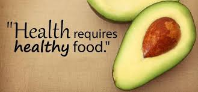

Råd om helse
Her finner du raske helseråd og lenker til informasjon på andre språk
Søvn
God søvn er viktig for å ha god fysisk og mental helse. Fast døgnrytme hjelper med å opprettholde god søvn.
Hvor mye søvn trenger vi hver natt?
| Alder | Timer |
|---|---|
| 0-3 måneder | 14-17 timer |
| 4-11 måneder | 12-15 timer |
| 1-2 år | 11-14 timer |
| 3-5 år | 10-13 timer |
| 6-13 år | 9-11 timer |
| 14-17 | 8-10 timer |
| 18-25 | 7-9 timer |
| 26-64 | 7-9 timer |
| 65 år+ | 7-8 timer |
Feber
Feber er en kroppstemperatur på over 38°C. Høy feber er kroppstemperatur på over 40°C. Barn får lettere feber enn voksne. Det er viktig å drikke mer vann dersom man har feber. Vanligviser er feber helt ufarlig. Kontakt lege ved høy feber og mistanke om alvorlig sykdom.
Virusinfeksjon i kroppen er vanlig årsak til feber. Dette kan føre til muskelverk, smerter i halsen og hodepine. Medisin med paracetamol hjelper mot dette. Dette kan man kjøpe i dagligvarebutikk.
Kilde: https://nhi.no/sykdommer/barn/infeksjoner/feber-rad/